الملحق التوثيقي الأول
الوثائق واللوحات الأرشيفية المصوَّرة
نماذج مصوَّرة منتقاة من المنشورات والمقارنات والشواهد المحفوظة في أرشيف الكتاب (١٩٩٣ – ١٢ نوفمبر ٢٠٢٦)
لوحة ١
مقارنة مجتمع r/Arabic_Games بين تعريبَي Ocarina of Time 3DS (28 مارس 2026)
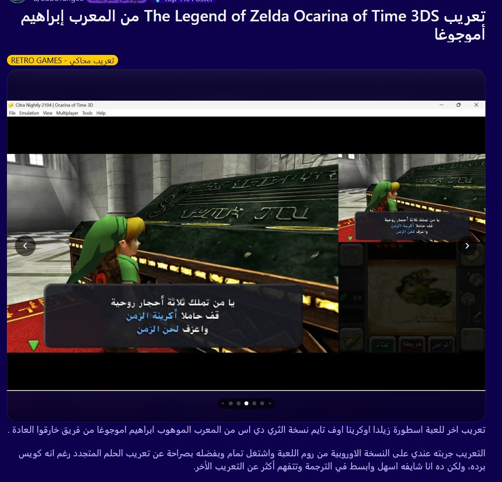
لوحة ٢
عبارة «فاحمد حظك» في حوار شخصية «إنغو» — ريميك Ocarina of Time (نوفمبر 2026)
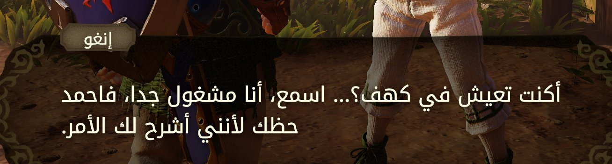
لوحة ٣
عيوب تدفق النص الأولية في النسخة الآلية الأولى لـ Twilight Princess (1 سبتمبر 2026)
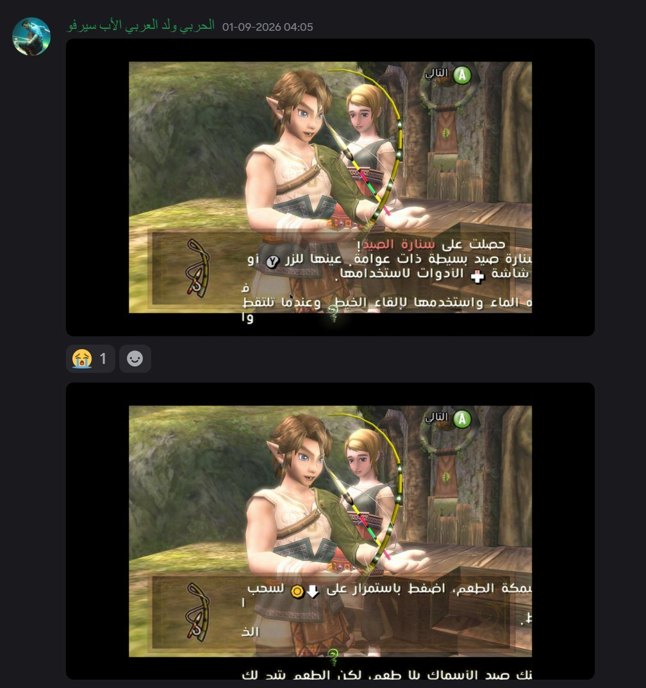
لوحة ٤
إعلان هشام (@Arabic_Hesham) عن تحديث المحاذاة والكيبورد العربي (2 أكتوبر 2026)
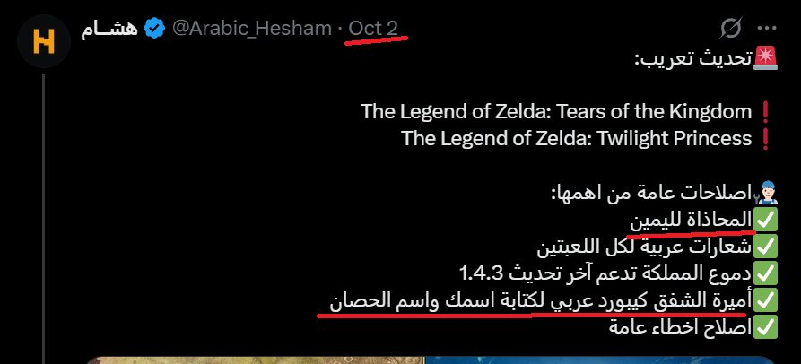
لوحة ٥
إعلان «مكتبة أسمر» (@AsmarGamesAR) عن تعريب Wuthering Waves (10 نوفمبر 2026)
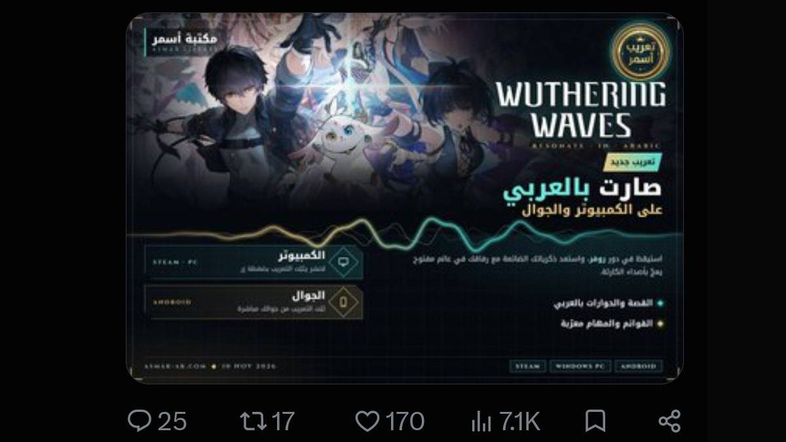
لوحة ٦
توثيق حظر حساب @AllenWouka قبل صدور الاعتذار العلني من @AsmarGamesAR (11 نوفمبر 2026)
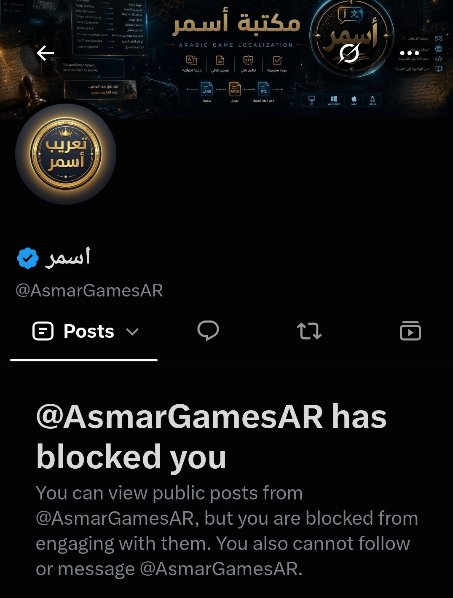
لوحة ٧
صفحة تعريب Balatro في موقع «فريق الأصل» (@ELASSLTEAM) المرفقة ببيان 11 نوفمبر
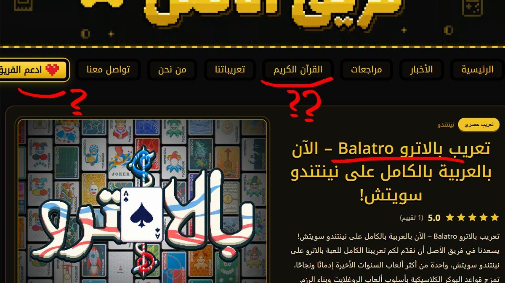
لوحة ٨
سجال مخاطر الحظر (Ban) في الأونلاين ووصف التعريب بأنه «تعريب خارجي» (10–11 نوفمبر 2026)
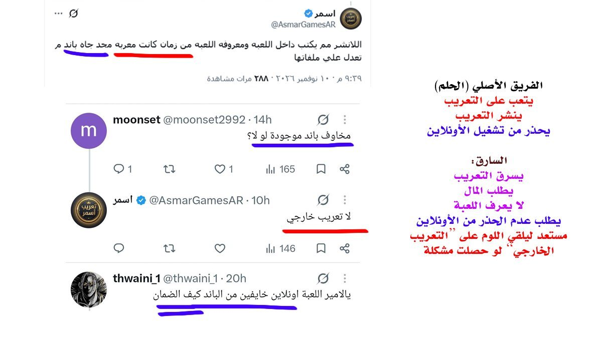
لوحة ٩
ردّ هشام (@Arabic_Hesham) وإطلاقه موقع المقارنة البرمجية لـ OMORI بنسبة 6.95% (11 نوفمبر 2026)
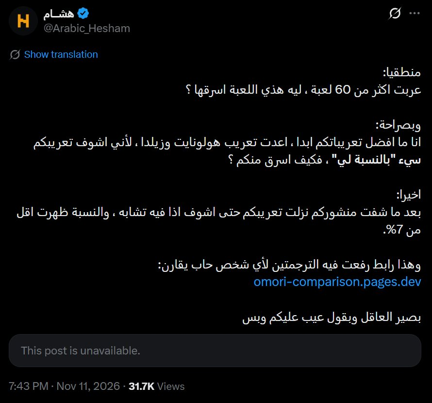
لوحة ١٠
إطلاق هشام لموقع مقارنة أخطاء وركاكة Hollow Knight (12 نوفمبر 2026)
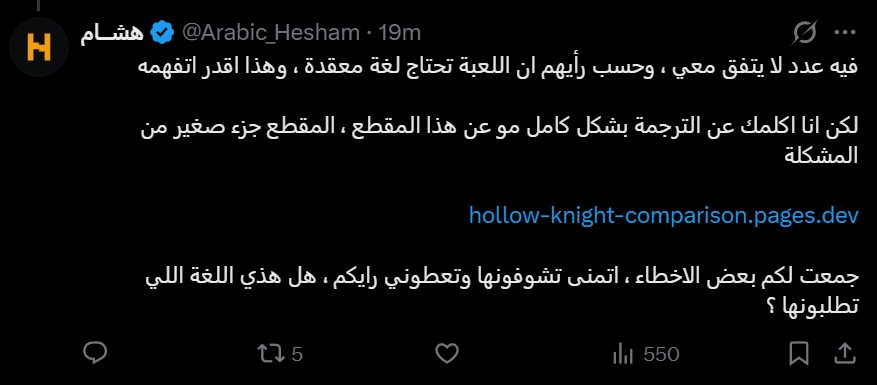
لوحة ١١
رسالة المترجم اليوناني Yiannis لاستئذان هشام في استخدام حزمة أدواته مفتوحة المصدر (31 مايو 2026)
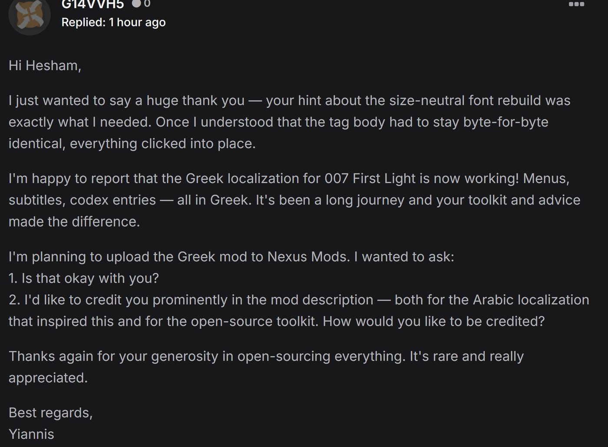
لوحة ١٢
الواجهة الفنية لتعريب ودبلجة «ص» (@sbalhatlani) الفردية بالذكاء الاصطناعي لريميك أوكارينا الزمن (نوفمبر 2026)
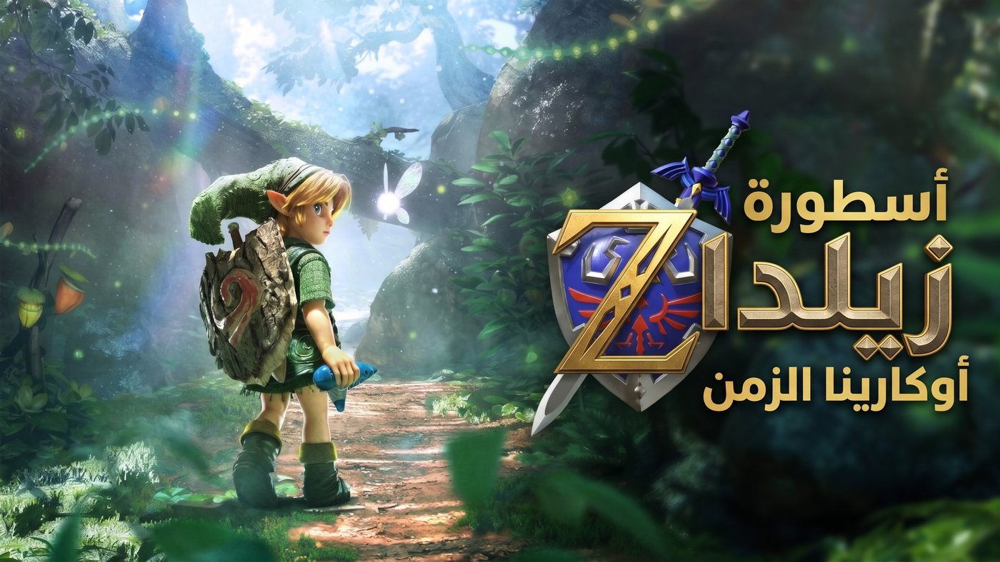
لوحة ١٣
بيان «تنويه مهم» الصادر عن عذبي (AthbiStudio) ضد منتحلي اسمه وبائعي تعريباته المجانية (11 نوفمبر 2026)
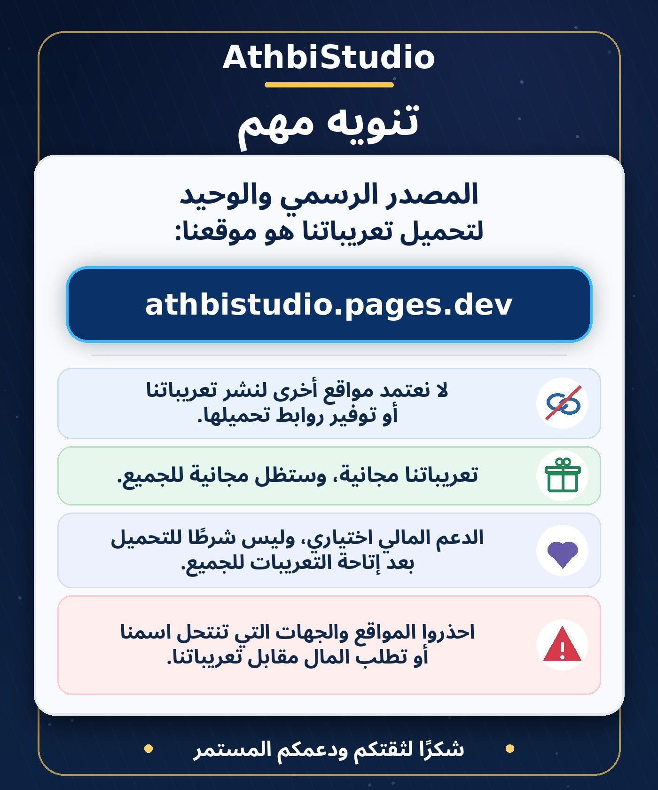